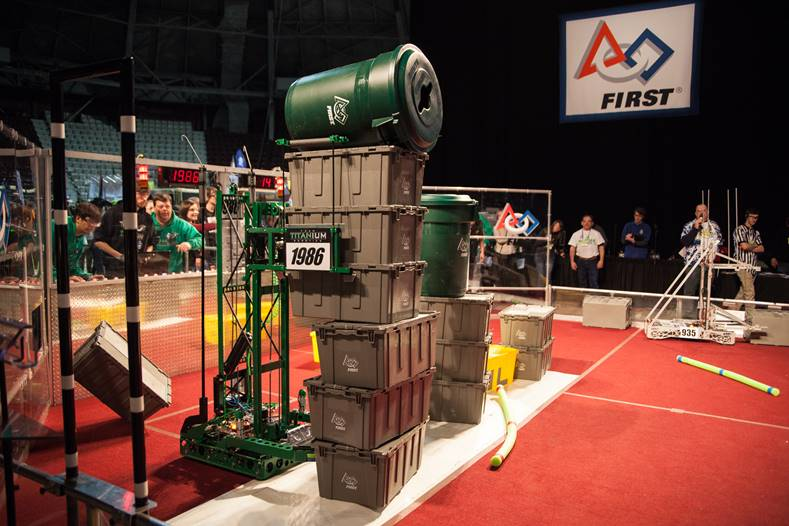

It is important to note that FIRST JUDGES ARE NOT REFEREES of the Competition! Accordingly, although you may find it fun and useful in evaluating teams for consideration of certain awards, Judges do not need to understand the intricate rules applying to the robots participating in the Competition. Refer all game questions that you may receive to the Head Referee.
